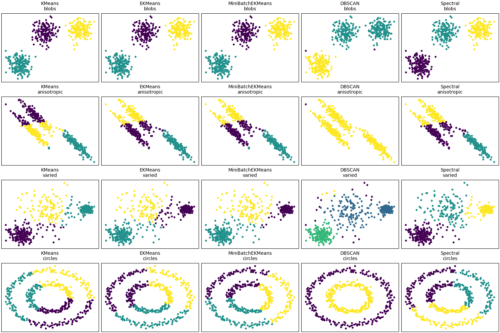

Note
Go to the end to download the full example code.
Comparison of clustering algorithms on toy datasets#
This example compares clustering results for multiple algorithms:
KMeans, DBSCAN, SpectralClustering from scikit-learn and
EKMeans/MiniBatchEKMeans from this package.
The intent is similar to the clustering comparison in scikit-learn’s docs.
import numpy as np
import matplotlib.pyplot as plt
from sklearn import datasets
from sklearn.preprocessing import StandardScaler
from sklearn.cluster import KMeans as SKKMeans, DBSCAN, SpectralClustering
from sklekmeans import EKMeans, MiniBatchEKMeans
def make_datasets(random_state=170):
X1, y1 = datasets.make_blobs(n_samples=500, centers=3, cluster_std=1.0, random_state=random_state)
# Anisotropicly distributed data
X2, y2 = datasets.make_blobs(n_samples=500, centers=3, random_state=random_state)
transformation = np.array([[0.6, -0.6], [-0.4, 0.8]])
X2 = X2 @ transformation
# Different variance
X3, y3 = datasets.make_blobs(n_samples=500, centers=3, cluster_std=[1.0, 2.5, 0.5], random_state=random_state)
# Noisy circles
X4, y4 = datasets.make_circles(n_samples=500, factor=0.5, noise=0.05, random_state=random_state)
return [(X1, y1, "blobs"), (X2, y2, "anisotropic"), (X3, y3, "varied"), (X4, y4, "circles")]
algorithms = [
("KMeans", lambda: SKKMeans(n_clusters=3, n_init=10, random_state=0)),
("EKMeans", lambda: EKMeans(n_clusters=3, random_state=0, alpha="dvariance")),
("MiniBatchEKMeans", lambda: MiniBatchEKMeans(n_clusters=3, random_state=0, batch_size=64, max_epochs=5)),
("DBSCAN", lambda: DBSCAN(eps=0.3, min_samples=5)),
("Spectral", lambda: SpectralClustering(n_clusters=3, assign_labels="discretize", random_state=0)),
]
def plot_panel(ax, X, labels, title):
ax.scatter(X[:, 0], X[:, 1], c=labels, s=10, cmap="viridis")
ax.set_xticks([])
ax.set_yticks([])
ax.set_title(title, fontsize=10)
rng = np.random.RandomState(0)
rows = len(make_datasets())
cols = len(algorithms)
fig, axes = plt.subplots(rows, cols, figsize=(3.0 * cols, 2.5 * rows), constrained_layout=True)
for row_idx, (X, y, name) in enumerate(make_datasets()):
X_scaled = StandardScaler().fit_transform(X)
for col_idx, (label, make_algo) in enumerate(algorithms):
ax = axes[row_idx, col_idx]
try:
model = make_algo()
# Some algorithms don't expose labels_ until fit_predict
if hasattr(model, "fit_predict"):
labels_pred = model.fit_predict(X_scaled)
else:
model.fit(X_scaled)
labels_pred = getattr(model, "labels_", None)
if labels_pred is None:
# Fall back to predict
labels_pred = model.predict(X_scaled)
except Exception as e:
labels_pred = np.full(shape=X_scaled.shape[0], fill_value=-1)
label = f"{label} (error)"
print(f"{label} failed on {name}: {e}")
plot_panel(ax, X_scaled, labels_pred, f"{label}\n{name}")
plt.show()
Total running time of the script: (0 minutes 3.723 seconds)